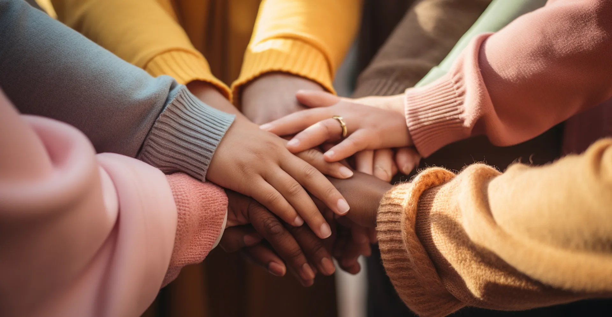
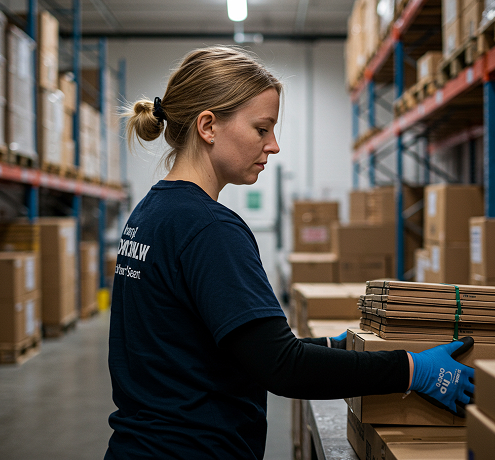
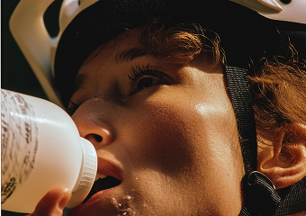
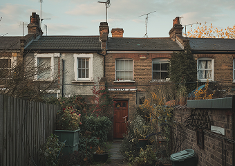

Campagne en cours
Ensemble, donnons une chance à chacun
Rejoignez-nous pour apporter espoir, aide et soutien durable à ceux qui en ont besoin, grâce à la générosité et à des collectes de fonds qui changent des vies.


Nous nous consacrons à améliorer des vies grâce à des dons significatifs, des projets communautaires et des initiatives bénévoles, en travaillant chaque jour pour répandre l'espoir et créer un changement positif durable.

Fournir des livres, des fournitures et des opportunités d'apprentissage essentiels pour que chaque enfant puisse apprendre, grandir et construire un avenir meilleur.

Fournir des livres, des fournitures et des opportunités d'apprentissage essentiels pour que chaque enfant puisse apprendre, grandir et construire un avenir meilleur.

Fournir des livres, des fournitures et des opportunités d'apprentissage essentiels pour que chaque enfant puisse apprendre, grandir et construire un avenir meilleur.

Offrir des soins médicaux gratuits, des médicaments vitaux et des services de santé aux personnes ayant peu ou pas accès aux traitements.



“Faire un don à KTZ GROUP SAS était vraiment spécial — leur bienveillance et leur honnêteté m’ont profondément inspiré chaque jour, rempli d’espoir.”

“Faire un don à KTZ GROUP SAS était vraiment spécial — leur bienveillance et leur honnêteté m’ont profondément inspiré chaque jour, rempli d’espoir.”

“Notre partenariat avec la fondation nous a permis de soutenir de nombreux enfants — leur sérieux et leur professionnalisme en font un partenaire exemplaire.”

“Faire un don à KTZ GROUP SAS était vraiment spécial — leur bienveillance et leur honnêteté m’ont profondément inspiré chaque jour, rempli d’espoir.”
“Faire un don à KTZ GROUP SAS était vraiment spécial — leur bienveillance et leur honnêteté m’ont profondément inspiré chaque jour, rempli d’espoir.”
“Notre partenariat avec la fondation nous a permis de soutenir de nombreux enfants — leur sérieux et leur professionnalisme en font un partenaire exemplaire.”
Nous garantissons une transparence totale dans chaque campagne. Du suivi détaillé des dons aux mises à jour en temps réel des projets, chaque action est partagée ouvertement avec nos donateurs. Nous croyons que lorsque vous donnez, vous méritez de voir le véritable impact de votre générosité — comment votre contribution transforme des vies et bâtit des communautés plus solides et plus heureuses.
Vos dons soutiennent directement des initiatives qui changent des vies : distribution alimentaire, éducation pour les enfants défavorisés et accès à l'eau potable dans les villages reculés. Chaque contribution est utilisée avec soin pour créer un changement durable, renforcer les communautés et atteindre ceux qui en ont le plus besoin — chaque jour.
Oui ! Vous pouvez explorer et choisir parmi un large éventail de campagnes — éducation des enfants, autonomisation des femmes, aide d'urgence, soutien médical, distribution alimentaire et développement communautaire. Chaque campagne est conçue pour apporter un changement concret et de l'espoir à ceux dans le besoin. Votre générosité compte.
Nous partageons régulièrement des rapports détaillés, des témoignages inspirants et des mises à jour transparentes pour que chaque donateur voie comment sa contribution fait une vraie différence. Des bilans financiers aux histoires des bénéficiaires — nous vous tenons informé à chaque étape, en montrant comment chaque don est utilisé de manière responsable.
Grâce à votre généreux soutien, nous avons nourri des centaines de familles, construit des abris sûrs et offert réconfort, éducation et espoir à d’innombrables personnes dans le besoin. Chaque petit geste de générosité, chaque don et chaque moment de compassion s’additionne — créant une communauté plus durable, plus forte et plus solidaire.